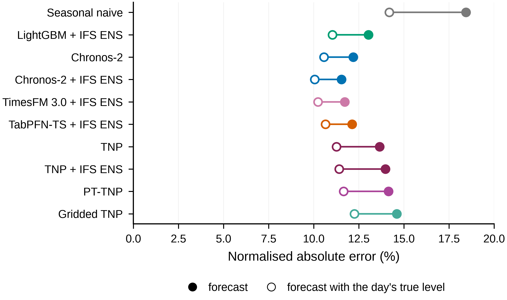
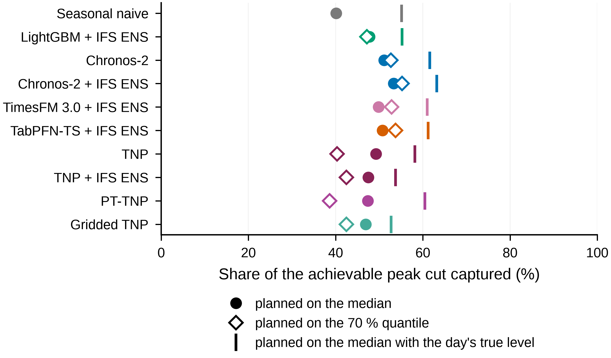
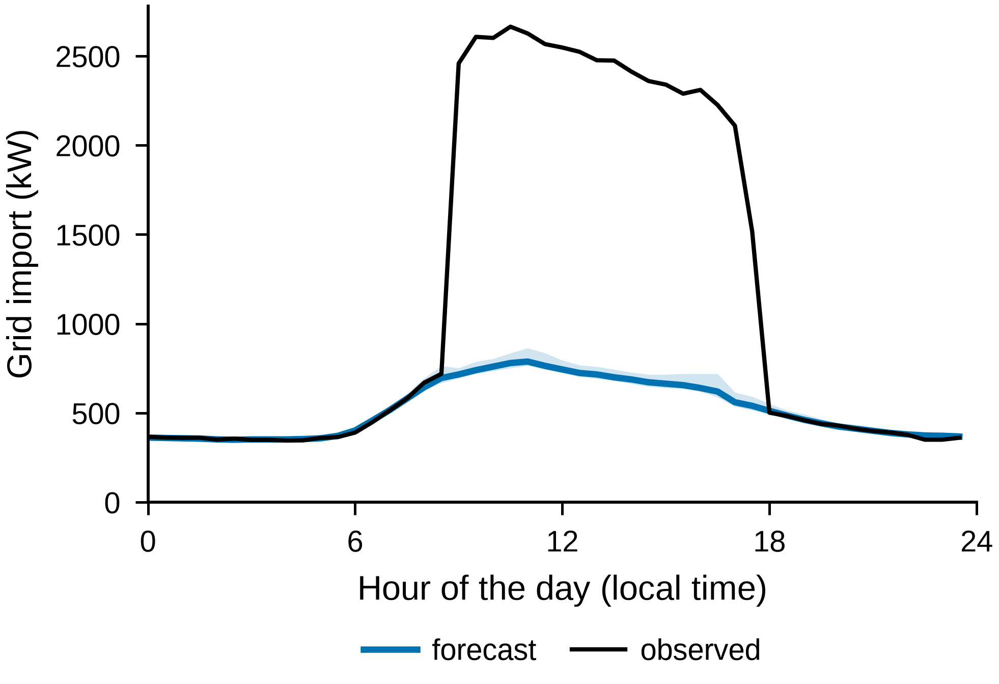
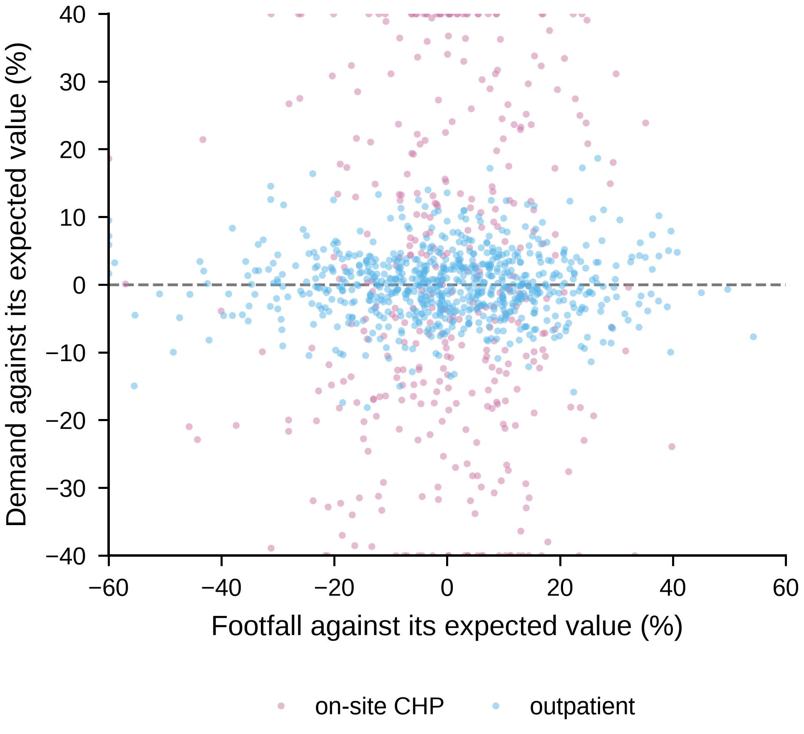
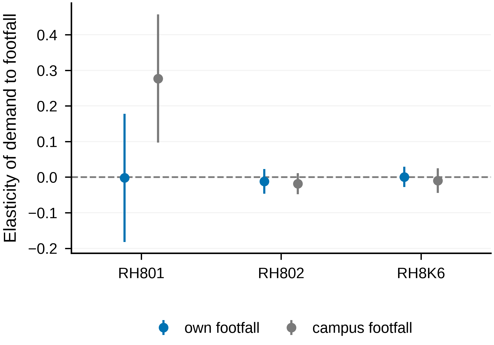
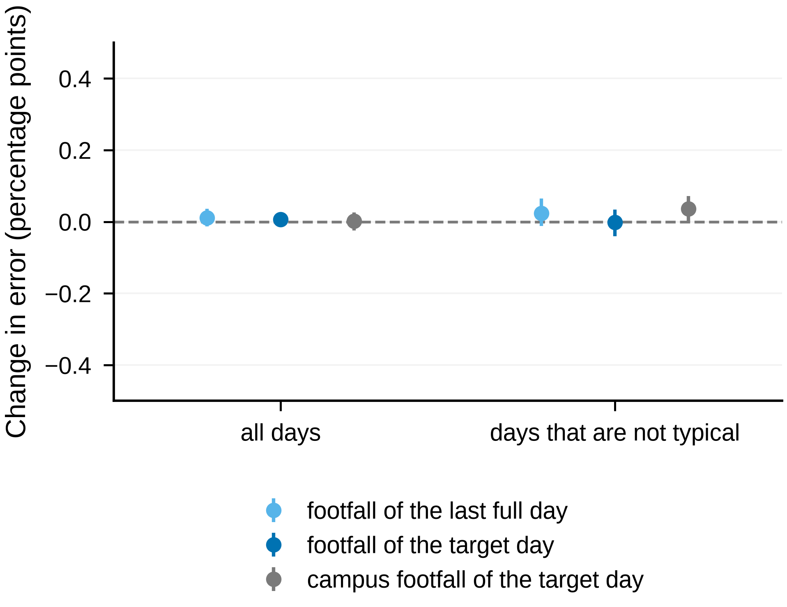
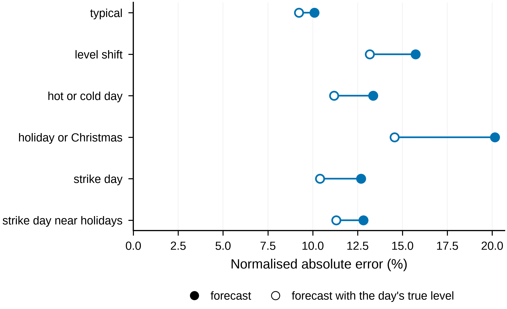
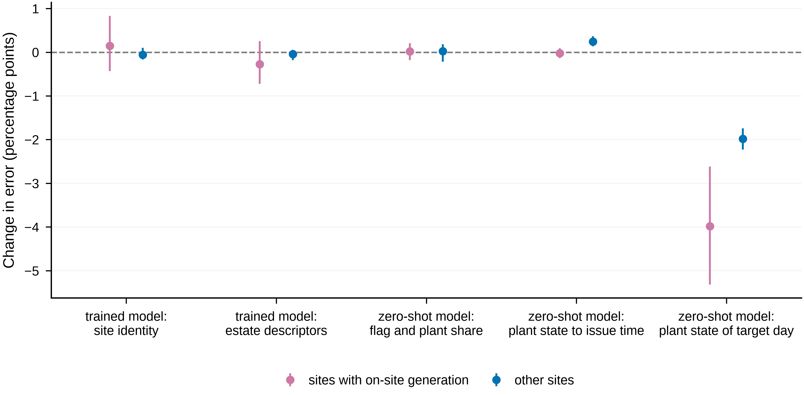

Where the day-ahead error sits, and what can remove it
The test of the two hypotheses behind the forecast finding of the kickoff deck, 14 November
2026, all on CPU. Commands: forecast-probes (new forecasts), forecast-anatomy (tables).
Modules: code/src/sense_energy/analysis/forecast_anatomy.py,
experiments/forecast_probe.py, data/strikes.py. Tables in
code/reports/forecast_anatomy/, figures from code/scripts/forecast_anatomy/.
The proof of concept (doc/poc_results.md) ended with a research avenue, "train a compact
prior-data fitted network with occupancy and mobility signals; measure it in decisions, not
only in error", and two hypotheses:
- H1. Occupancy and mobility signals decrease the error on atypical days.
- H2. On-site generation causes most of the rest of the error.
What the page answers: where the error of the best models is (which sites, which days, level or shape, error or decision value); whether activity moves electricity at all (doctor strikes, footfall); what more history or a later issue time gives; and what heat and cold waves do.
New forecasts, all Chronos-2 with no training: every day of the test window (91 sites, 342 days, 31,122 forecasts), four shorter histories, two issue times on the target day, and seven variants with footfall at the three sites that have it. New data: the dates of the national doctor strikes (British Medical Association and government notices).
The answers in short
- H2 holds, in part. The 12 sites with on-site CHP have 50 % of the metered demand and 79 % of the forecast error in kWh; three of them have 57 %. Half of that is their size: over their total demand (import plus reported generation) the error is 6.4 %, where sites of that size without a plant have about 3.4 %. What the plant adds is 37 % of all the panel's error.
- The plant error is steps. On 15 % of their days the import of a CHP site steps by more than its own mean within two hours, with no pattern from the last four weeks. Those days are 2 % of all site-days and hold 42 % of all error. A forecast issued at 06:00 on the day itself does not see them either: the error at these sites falls from 19.1 % to 17.1 %.
- H1 has no support. On 34 doctor-strike weekdays away from holidays, demand between 08:00 and 18:00 changes by −0.4 % (95 % interval −1.6 to +0.8); no hour of the day moves by 2 %. The elasticity of demand to daily footfall is 0.00 at the three sites with counts. A model that is given the true footfall of the target day forecasts no better: +0.006 points of error (−0.012 to +0.024), where calendar, price and weather inputs take 0.86 points off.
- A daily signal has little to give. A perfect forecast of each day's mean level takes the error of the best model from 11.5 % to 10.1 % and its decision value from 53 % to 63 % of the achievable peak cut. The rest is the shape of the day.
- History: two weeks are enough. 12.7 % error with two weeks of context, 12.2 % with six; one week gives 16.4 %.
- Heat waves cost value, not accuracy. Against the other days of the same site and month, heat-wave days have 14.7 % against 13.2 % error, but a battery that plans on the forecast keeps 33 % against 50 % of the achievable peak cut. With forecast weather among the inputs the best model keeps 40 %.
- The research avenue changes. The compact models trained on the panel are behind the pre-trained ones (13.7 to 14.6 % against 11.5 %), and the signals the avenue named carry no information for electricity. The signal that is missing is the state of the plant.
1. Level and shape (level_oracle_models)

level_oracle_models PDFFor each site-day the forecast is rescaled to the day's true mean. The error that is left is shape; the part that went is what any daily signal (occupancy, footfall, plant state as a daily value) could give at most. A signal that changes the class of the day's shape, such as a holiday flag, can give more.
level_oracle_models PDFinteractive; source: code/reports/forecast_anatomy/table_models.csv
| model | nmae_pct | nmae_level_oracle_pct | level_share_pct | captured_point_pct | captured_q70_pct | captured_level_pct |
|---|---|---|---|---|---|---|
| chronos2_ifs | 11.5 | 10.1 | 19.5 | 53.3 | 55.2 | 63.2 |
| timesfm3_ifs | 11.7 | 10.2 | 21 | 49.8 | 52.8 | 61 |
| tabpfn_ts_ifs | 12.1 | 10.7 | 16 | 50.8 | 53.7 | 61.2 |
| chronos2 | 12.2 | 10.6 | 19.6 | 51.1 | 52.7 | 61.6 |
| lightgbm_ifs | 13 | 11 | 28.2 | 47.7 | 47.2 | 55.3 |
| tnp | 13.7 | 11.3 | 29 | 49.3 | 40.3 | 58.2 |
| tnp_ifs | 14 | 11.4 | 32 | 47.5 | 42.5 | 53.8 |
| pttnp | 14.1 | 11.7 | 31.4 | 47.4 | 38.6 | 60.5 |
| gtnp | 14.6 | 12.3 | 28.3 | 46.9 | 42.5 | 52.7 |
| seasonal_naive | 18.4 | 14.2 | 40.1 | 40.1 | 55.1 |
source: code/reports/forecast_anatomy/table_models.csv (10 rows shown)
- A fifth of the error of the pre-trained models is level: 11.5 % becomes 10.1 % for Chronos-2 with forecast weather. The models trained on the panel have more to gain (28 to 32 % of their error is level), the seasonal naive forecast 40 %.
- With the true level the models are within two points of each other (10.1 to 12.3 %). What separates them today is mostly how well they place the level of the day.
2. Decisions (value_plans)

value_plans PDFThe decision is the one of doc/flexibility_and_design_winters.md: a battery (20 % of mean
demand, two hours) sets a threshold for the day from the forecast and defends it in real time.
The score is the share of the peak cut that perfect foresight achieves.
value_plans PDF| group | sites | nmae_pct | nmae_level_oracle_pct | level_share_pct | error_share_pct | demand_share_pct | captured_point_pct | captured_q70_pct | captured_level_pct |
|---|---|---|---|---|---|---|---|---|---|
| inpatient | 33 | 10.4 | 9.5 | 13.6 | 12.4 | 35 | 57.5 | 63.1 | 67.6 |
| on-site CHP | 12 | 15.5 | 13.3 | 20.6 | 78.6 | 50.3 | 52 | 51.4 | 61.4 |
| outpatient | 46 | 11.3 | 9.6 | 17.7 | 9 | 14.8 | 49 | 52.3 | 60.6 |
source: code/reports/forecast_anatomy/table_groups.csv (3 rows shown)
- 53 % with the best forecast, 55 % with its 70 % quantile, 63 % with the true daily level. A perfect daily signal is worth ten points; 37 points stay out of reach of any signal that only moves the level.
- By group: inpatient sites 57.5 % (63.1 % on the quantile), CHP sites 52.0 % (51.4 %), outpatient sites 49.0 % (52.3 %). Planning on a high quantile helps where the error is noise and not where it is a plant.
3. On-site generation (error_share_groups, error_by_step, chp_size_adjusted)
error_share_groups PDFSteps. For each site-day: the largest difference between the mean of the next two hours and the mean of the last two hours, after the site's usual profile (median of the same half-hour and weekday in the last four weeks) is taken out, as a share of the site's mean demand.
error_by_step PDFinteractive; source: code/reports/forecast_anatomy/error_by_group_step.csv
| group | step_bin | site_days | day_share_of_group_pct | nmae_kwh_weighted_pct | error_share_pct | demand_share_pct |
|---|---|---|---|---|---|---|
| inpatient | under 10 % | 433 | 19.6 | 2.3 | 4.5 | 23.2 |
| inpatient | 10 to 25 % | 658 | 29.7 | 6.2 | 3.9 | 7.6 |
| inpatient | 25 to 50 % | 661 | 29.9 | 10.1 | 2.6 | 3.1 |
| inpatient | 50 to 100 % | 379 | 17.1 | 16.1 | 1.1 | 0.8 |
| inpatient | over 100 % | 81 | 3.7 | 19.7 | 0.4 | 0.2 |
| on-site CHP | under 10 % | 172 | 21 | 3.7 | 2.8 | 9.2 |
| on-site CHP | 10 to 25 % | 208 | 25.3 | 11.6 | 10.9 | 11.3 |
| on-site CHP | 25 to 50 % | 167 | 20.3 | 12.6 | 7.5 | 7.2 |
| on-site CHP | 50 to 100 % | 156 | 19 | 18.2 | 14.4 | 9.6 |
| on-site CHP | over 100 % | 118 | 14.4 | 39.9 | 43.1 | 13.1 |
| outpatient | under 10 % | 628 | 20.5 | 4.4 | 1.4 | 3.9 |
| outpatient | 10 to 25 % | 1104 | 36.1 | 6.3 | 3.9 | 7.6 |
| outpatient | 25 to 50 % | 710 | 23.2 | 10.8 | 1.8 | 2 |
| outpatient | 50 to 100 % | 401 | 13.1 | 19 | 1 | 0.7 |
| outpatient | over 100 % | 218 | 7.1 | 21 | 0.7 | 0.4 |
source: code/reports/forecast_anatomy/error_by_group_step.csv (15 rows shown)
- Steps larger than the site's mean demand: 14 % of CHP site-days, 43 % of all error (69 test days; 15 % and 42 % on all 342 days). On these days the error is 40 % of the import. At sites without CHP such days are 4 to 7 % of the days and 1 % of the error.
- The steps are a plant that starts or stops. In the example the import is 0.4 MW at night, 2.7 MW from 09:00 to 18:00 and 0.4 MW again; the forecast peaks at 0.8 MW.

switch_day_example PDFSize. The meter of a CHP site records import. With the plant's reported share of the
site's electricity (estates returns, chp_dispatch), total demand is import / (1 − share). The
error of a site without a plant falls with its size (slope −0.21 in logs); the line gives the
error to expect at the total demand of each CHP site.
chp_size_adjusted PDF| site_code | mean_kw | chp_share | total_kw | nmae_pct | error_of_total_pct | expected_nmae_pct | error_mwh | expected_error_mwh | plant_added_mwh | error_share_pct | big_step_days | days |
|---|---|---|---|---|---|---|---|---|---|---|---|---|
| RH801 | 1015.73 | 0.64 | 2803.87 | 22.98 | 8.33 | 3.13 | 386.61 | 145.25 | 241.37 | 21.46 | 14 | 69 |
| RXN02 | 769.18 | 0.78 | 3535.87 | 26.26 | 5.71 | 2.98 | 334.43 | 174.3 | 160.13 | 18.57 | 27 | 69 |
| RKB01 | 843.02 | 0.76 | 3556 | 22.5 | 5.33 | 2.97 | 300.42 | 167.47 | 132.95 | 16.68 | 18 | 66 |
| R0A66 | 603.13 | 0.48 | 1149.29 | 12.65 | 6.64 | 3.79 | 126.32 | 72.04 | 54.28 | 7.01 | 13 | 69 |
| RL131 | 425.45 | 0.43 | 744.27 | 17.48 | 9.99 | 4.15 | 123.12 | 51.2 | 71.93 | 6.84 | 5 | 69 |
| RXN01 | 239.04 | 0.61 | 620.35 | 16.74 | 6.45 | 4.32 | 66.25 | 44.37 | 21.88 | 3.68 | 9 | 69 |
| R0A07 | 191.07 | 0.68 | 598.61 | 6.66 | 2.12 | 4.35 | 20.45 | 41.89 | -21.44 | 1.14 | 0 | 67 |
| RRERS | 51.1 | 0.49 | 99.48 | 22.83 | 11.73 | 6.39 | 19.04 | 10.37 | 8.67 | 1.06 | 25 | 68 |
| RJC46 | 110.09 | 0 | 110.35 | 10.35 | 10.32 | 6.25 | 18.86 | 11.42 | 7.44 | 1.05 | 3 | 69 |
| RQ301 | 281.19 | 281.19 | 2.59 | 2.59 | 5.12 | 12.07 | 23.82 | -11.75 | 0.67 | 0 | 69 | |
| RN325 | 24.81 | 24.81 | 15.66 | 15.66 | 8.6 | 6.44 | 3.53 | 2.9 | 0.36 | 3 | 69 | |
| RYX08 | 12.87 | 12.87 | 9.35 | 9.35 | 9.89 | 1.99 | 2.11 | -0.12 | 0.11 | 1 | 69 |
source: code/reports/forecast_anatomy/chp_size_adjusted.csv (12 rows shown)
- CHP sites: 50 % of the import, 75 % of the total demand, 79 % of the error. Their error is 18.9 % of import and 6.4 % of total demand; sites without a plant would have 3.4 % at that size. The plant adds 47 % of these sites' error, which is 37 % of the panel's.
- The line is extrapolated. The largest site without CHP has 1.5 MW and an error of 1.9 %; the three largest CHP sites have 2.8 to 3.5 MW of total demand. With that site's rate in place of the line for those three, the plant's part is 47 %.
- One CHP site has no excess: a plant that runs flat (capacity factor 0.84, no large step in 67 test days) leaves an import that is forecast better than its size predicts (2.1 % against 4.4 %). The error comes with the switching, not with the plant.
- Known-ahead inputs help a little more where the plant follows no signal: calendar, price
and weather take 0.9 points off at the nine sites whose plant follows price or the red band
and 1.3 points at the three that do not (
chp_dispatch_gain.csv).
4. Doctor strikes as a shock to activity (strike_effect, strike_profile)
Nineteen national rounds of industrial action by junior (resident) doctors and consultants fall inside the record: 70 strike days, of which 34 are weekdays away from holidays, 18 are weekdays next to Christmas or Easter and 18 are weekend days. On these days hospitals cancelled elective operations and outpatient appointments in large numbers. Daily demand against the same site, month and weekday, with weather by site group and calendar controls; pseudo-strikes one week before and after as placebos; standard errors clustered by site and date.
strike_effect PDFTable: 35 rows
| outcome | term | site_type | sites | site_days | days | effect_pct | lo_pct | hi_pct | p |
|---|---|---|---|---|---|---|---|---|---|
| whole day | strike weekday, away from holidays | all sites | 132 | 3562 | 34 | -0.68 | -1.62 | 0.27 | 0.16 |
| whole day | strike weekday, next to Christmas or Easter | all sites | 131 | 1899 | 18 | -1.29 | -2.71 | 0.15 | 0.08 |
| whole day | strike weekend day | all sites | 132 | 2032 | 18 | -1.39 | -2.9 | 0.15 | 0.08 |
| whole day | one week before (placebo) | all sites | 132 | 4046 | 38 | 0.05 | -0.87 | 0.99 | 0.91 |
| whole day | one week after (placebo) | all sites | 132 | 4634 | 44 | -0.25 | -1.17 | 0.69 | 0.61 |
| 08:00 to 18:00 | strike weekday, away from holidays | all sites | 132 | 3562 | 34 | -0.4 | -1.6 | 0.81 | 0.52 |
| 08:00 to 18:00 | strike weekday, next to Christmas or Easter | all sites | 131 | 1899 | 18 | -2.2 | -3.96 | -0.4 | 0.02 |
| 08:00 to 18:00 | strike weekend day | all sites | 132 | 2032 | 18 | -0.84 | -2.87 | 1.24 | 0.43 |
| 08:00 to 18:00 | one week before (placebo) | all sites | 132 | 4046 | 38 | -0.07 | -1.19 | 1.06 | 0.9 |
| 08:00 to 18:00 | one week after (placebo) | all sites | 132 | 4634 | 44 | -0.13 | -1.3 | 1.06 | 0.83 |
| 00:00 to 06:00 | strike weekday, away from holidays | all sites | 132 | 3560 | 34 | -0.91 | -1.78 | -0.04 | 0.04 |
| 00:00 to 06:00 | strike weekday, next to Christmas or Easter | all sites | 131 | 1899 | 18 | -0.77 | -2.22 | 0.7 | 0.31 |
| 00:00 to 06:00 | strike weekend day | all sites | 132 | 2030 | 18 | -1.29 | -3.1 | 0.56 | 0.17 |
| 00:00 to 06:00 | one week before (placebo) | all sites | 132 | 4046 | 38 | -0.03 | -1.03 | 0.98 | 0.95 |
| 00:00 to 06:00 | one week after (placebo) | all sites | 132 | 4634 | 44 | -0.55 | -1.63 | 0.54 | 0.32 |
| 08:00 to 18:00 against night | strike weekday, away from holidays | all sites | 132 | 3560 | 34 | 0.56 | -0.44 | 1.57 | 0.27 |
| 08:00 to 18:00 against night | strike weekday, next to Christmas or Easter | all sites | 131 | 1899 | 18 | -1.46 | -2.95 | 0.06 | 0.06 |
| 08:00 to 18:00 against night | strike weekend day | all sites | 132 | 2030 | 18 | 0.47 | -1.44 | 2.41 | 0.63 |
| 08:00 to 18:00 against night | one week before (placebo) | all sites | 132 | 4046 | 38 | -0.07 | -0.99 | 0.86 | 0.89 |
| 08:00 to 18:00 against night | one week after (placebo) | all sites | 132 | 4634 | 44 | 0.43 | -0.69 | 1.55 | 0.46 |
| whole day | strike weekday, away from holidays | acute, no CHP | 36 | 860 | 34 | -0.59 | -1.8 | 0.64 | 0.35 |
| 08:00 to 18:00 | strike weekday, away from holidays | acute, no CHP | 36 | 860 | 34 | -0.42 | -2.05 | 1.23 | 0.61 |
| 08:00 to 18:00 against night | strike weekday, away from holidays | acute, no CHP | 36 | 860 | 34 | 0.78 | -0.64 | 2.23 | 0.29 |
| whole day | strike weekday, away from holidays | acute, CHP import | 20 | 464 | 34 | -1.71 | -5.4 | 2.13 | 0.38 |
| 08:00 to 18:00 | strike weekday, away from holidays | acute, CHP import | 20 | 464 | 34 | -0.86 | -5.12 | 3.59 | 0.7 |
| 08:00 to 18:00 against night | strike weekday, away from holidays | acute, CHP import | 20 | 462 | 34 | 1.36 | -2.56 | 5.42 | 0.5 |
| whole day | strike weekday, away from holidays | mental health | 37 | 1206 | 34 | 0.08 | -1.06 | 1.22 | 0.9 |
| 08:00 to 18:00 | strike weekday, away from holidays | mental health | 37 | 1206 | 34 | 0.07 | -1.41 | 1.57 | 0.93 |
| 08:00 to 18:00 against night | strike weekday, away from holidays | mental health | 37 | 1206 | 34 | 0.28 | -0.89 | 1.47 | 0.64 |
| whole day | strike weekday, away from holidays | community | 31 | 882 | 34 | -0.94 | -1.85 | -0.02 | 0.05 |
| 08:00 to 18:00 | strike weekday, away from holidays | community | 31 | 882 | 34 | -0.39 | -1.8 | 1.04 | 0.59 |
| 08:00 to 18:00 against night | strike weekday, away from holidays | community | 31 | 882 | 34 | 0.48 | -1.37 | 2.36 | 0.61 |
| whole day | strike weekday, away from holidays | ambulance | 8 | 150 | 34 | -0.73 | -1.99 | 0.54 | 0.26 |
| 08:00 to 18:00 | strike weekday, away from holidays | ambulance | 8 | 150 | 34 | -1.13 | -3.23 | 1.02 | 0.3 |
| 08:00 to 18:00 against night | strike weekday, away from holidays | ambulance | 8 | 150 | 34 | -1.47 | -3.45 | 0.56 | 0.16 |
source: code/reports/forecast_anatomy/strike_effect.csv (35 rows shown)
- No effect of the working day. 08:00 to 18:00: −0.40 % (−1.60 to +0.81). Whole day: −0.68 % (−1.62 to +0.27). Working hours against the night of the same day: +0.56 % (−0.44 to +1.57), the wrong sign for an activity effect.
- Hour by hour nothing moves by 2 %. The largest value is −1.9 % at 08:00 (interval −4.1 to +0.4); the week after, with no strike, shows −1.5 % in the same hour.
- Next to Christmas and Easter the working hours are 2.2 % lower (−4.0 to −0.4). Those weeks drift with the holidays whether there is a strike or not, which is why they are kept apart.
- By site type the acute sites without CHP show −0.42 % (−2.05 to +1.23) in working hours; no type shows an effect in working hours.
- The forecast is not too high on strike days. In the every-day run its median bias is −0.9 to −1.6 % on strike days against −0.2 to −0.5 % on typical days.
strike_profile PDF5. Footfall (footfall_partial, footfall_elasticity, mobility_forecast_difference)

footfall_partial PDF
footfall_elasticity PDF
mobility_forecast_difference PDFDaily footfall counts exist for three sites of one trust in 2024 (The Oxford Partnership, research licence).
In a regression. Log daily demand on log daily footfall within month and weekday, weather and holidays held fixed, Newey-West standard errors; the footfall of the university campus in the same city as the placebo.
footfall_partial PDF| site_code | model | term | days | elasticity | lo | hi | p | partial_r2 | raw_corr |
|---|---|---|---|---|---|---|---|---|---|
| RH801 | own footfall | log_visits | 366 | -0.002 | -0.182 | 0.178 | 0.982 | 0 | 0.018 |
| RH801 | campus footfall (placebo) | log_uni | 366 | 0.277 | 0.097 | 0.457 | 0.003 | 0.038 | 0.131 |
| RH801 | both | log_visits | 366 | -0.226 | -0.472 | 0.02 | 0.072 | 0.049 | 0.018 |
| RH801 | both | log_uni | 366 | 0.357 | 0.128 | 0.587 | 0.002 | 0.049 | 0.131 |
| RH802 | own footfall | log_visits | 366 | -0.012 | -0.047 | 0.023 | 0.5 | 0.002 | 0.43 |
| RH802 | campus footfall (placebo) | log_uni | 366 | -0.019 | -0.048 | 0.011 | 0.214 | 0.008 | 0.503 |
| RH802 | both | log_visits | 366 | -0.003 | -0.039 | 0.034 | 0.887 | 0.008 | 0.43 |
| RH802 | both | log_uni | 366 | -0.018 | -0.05 | 0.014 | 0.268 | 0.008 | 0.503 |
| RH8K6 | own footfall | log_visits | 366 | 0.001 | -0.028 | 0.029 | 0.965 | 0 | 0.503 |
| RH8K6 | campus footfall (placebo) | log_uni | 366 | -0.01 | -0.044 | 0.025 | 0.578 | 0.001 | 0.416 |
| RH8K6 | both | log_visits | 366 | 0.006 | -0.027 | 0.038 | 0.74 | 0.002 | 0.503 |
| RH8K6 | both | log_uni | 366 | -0.012 | -0.052 | 0.027 | 0.546 | 0.002 | 0.416 |
source: code/reports/forecast_anatomy/mobility_regression.csv (12 rows shown)
- Elasticity 0.00 at all three sites: −0.002 (−0.18 to +0.18) at the CHP site, −0.012 (−0.047 to +0.023) and +0.001 (−0.028 to +0.029) at the other two. The raw correlations of 0.43 and 0.50 are the weekly rhythm that both series share.
- The placebo is "significant" at the CHP site (0.28, p = 0.003): a warning about what a noisy import series can show.
In the forecast. Chronos-2 for every day from 13 February to 31 December 2024 with the proof of concept's inputs (calendar, price, weather) and the footfall added in context: the count of the last complete day; the count of the target day itself (a perfect footfall forecast); the campus count of the target day (placebo); and the last two again with one week of history. Paired differences with 95 % intervals from resampling weeks.
mobility_forecast_difference PDF| sites | kind | model | site_days | nmae_pct | crps_pct | coverage_80 |
|---|---|---|---|---|---|---|
| all three sites | all days | mob_base | 969 | 10.859 | 8.966 | 0.768 |
| all three sites | all days | mob_base_ctx336 | 969 | 14.147 | 11.497 | 0.774 |
| all three sites | all days | mob_oracle | 969 | 10.871 | 8.983 | 0.77 |
| all three sites | all days | mob_oracle_ctx336 | 969 | 14.234 | 11.529 | 0.787 |
| all three sites | all days | mob_plain | 969 | 11.759 | 9.63 | 0.764 |
| all three sites | all days | mob_prev_day | 969 | 10.885 | 8.993 | 0.773 |
| all three sites | all days | mob_uni_oracle | 969 | 10.842 | 8.966 | 0.771 |
| all three sites | holiday or Christmas | mob_base | 39 | 8.173 | 6.35 | 0.779 |
| all three sites | holiday or Christmas | mob_base_ctx336 | 39 | 11.058 | 8.862 | 0.783 |
| all three sites | holiday or Christmas | mob_oracle | 39 | 8.141 | 6.309 | 0.784 |
| all three sites | holiday or Christmas | mob_oracle_ctx336 | 39 | 10.41 | 8.572 | 0.819 |
| all three sites | holiday or Christmas | mob_plain | 39 | 12.428 | 10.219 | 0.658 |
| all three sites | holiday or Christmas | mob_prev_day | 39 | 8.162 | 6.372 | 0.785 |
| all three sites | holiday or Christmas | mob_uni_oracle | 39 | 8.358 | 6.453 | 0.778 |
source: code/reports/forecast_anatomy/table_mobility.csv (14 rows shown)
Table: 48 rows
| sites | kind | model | against | metric | diff_pts | lo | hi |
|---|---|---|---|---|---|---|---|
| all three sites | all days | mob_prev_day | mob_base | nMAE | 0.026 | -0.037 | 0.095 |
| all three sites | all days | mob_prev_day | mob_base | CRPS | 0.027 | -0.014 | 0.071 |
| all three sites | all days | mob_oracle | mob_base | nMAE | 0.011 | -0.029 | 0.057 |
| all three sites | all days | mob_oracle | mob_base | CRPS | 0.016 | -0.013 | 0.046 |
| all three sites | all days | mob_uni_oracle | mob_base | nMAE | -0.017 | -0.062 | 0.028 |
| all three sites | all days | mob_uni_oracle | mob_base | CRPS | -0.001 | -0.034 | 0.033 |
| all three sites | all days | mob_oracle | mob_uni_oracle | nMAE | 0.028 | -0.023 | 0.078 |
| all three sites | all days | mob_oracle | mob_uni_oracle | CRPS | 0.017 | -0.02 | 0.052 |
| all three sites | all days | mob_oracle_ctx336 | mob_base_ctx336 | nMAE | 0.086 | 0.008 | 0.168 |
| all three sites | all days | mob_oracle_ctx336 | mob_base_ctx336 | CRPS | 0.032 | -0.024 | 0.086 |
| all three sites | all days | mob_base | mob_plain | nMAE | -0.9 | -1.286 | -0.525 |
| all three sites | all days | mob_base | mob_plain | CRPS | -0.664 | -0.978 | -0.344 |
| all three sites | not typical | mob_prev_day | mob_base | nMAE | -0.027 | -0.132 | 0.089 |
| all three sites | not typical | mob_prev_day | mob_base | CRPS | 0.001 | -0.073 | 0.072 |
| all three sites | not typical | mob_oracle | mob_base | nMAE | 0.009 | -0.092 | 0.154 |
| all three sites | not typical | mob_oracle | mob_base | CRPS | 0.024 | -0.048 | 0.119 |
| all three sites | not typical | mob_uni_oracle | mob_base | nMAE | 0.012 | -0.1 | 0.132 |
| all three sites | not typical | mob_uni_oracle | mob_base | CRPS | 0.023 | -0.046 | 0.102 |
| all three sites | not typical | mob_oracle | mob_uni_oracle | nMAE | -0.003 | -0.079 | 0.078 |
| all three sites | not typical | mob_oracle | mob_uni_oracle | CRPS | 0.001 | -0.059 | 0.064 |
| all three sites | not typical | mob_oracle_ctx336 | mob_base_ctx336 | nMAE | 0.061 | -0.111 | 0.235 |
| all three sites | not typical | mob_oracle_ctx336 | mob_base_ctx336 | CRPS | 0.035 | -0.088 | 0.157 |
| all three sites | not typical | mob_base | mob_plain | nMAE | -1.348 | -2.042 | -0.688 |
| all three sites | not typical | mob_base | mob_plain | CRPS | -1.003 | -1.603 | -0.433 |
| two sites without CHP | all days | mob_prev_day | mob_base | nMAE | 0.01 | -0.013 | 0.036 |
| two sites without CHP | all days | mob_prev_day | mob_base | CRPS | 0.012 | -0.006 | 0.031 |
| two sites without CHP | all days | mob_oracle | mob_base | nMAE | 0.006 | -0.012 | 0.024 |
| two sites without CHP | all days | mob_oracle | mob_base | CRPS | 0.006 | -0.007 | 0.019 |
| two sites without CHP | all days | mob_uni_oracle | mob_base | nMAE | 0.002 | -0.024 | 0.026 |
| two sites without CHP | all days | mob_uni_oracle | mob_base | CRPS | 0.003 | -0.017 | 0.021 |
| two sites without CHP | all days | mob_oracle | mob_uni_oracle | nMAE | 0.004 | -0.025 | 0.034 |
| two sites without CHP | all days | mob_oracle | mob_uni_oracle | CRPS | 0.003 | -0.019 | 0.026 |
| two sites without CHP | all days | mob_oracle_ctx336 | mob_base_ctx336 | nMAE | 0.032 | -0.052 | 0.115 |
| two sites without CHP | all days | mob_oracle_ctx336 | mob_base_ctx336 | CRPS | 0.013 | -0.046 | 0.072 |
| two sites without CHP | all days | mob_base | mob_plain | nMAE | -0.861 | -1.119 | -0.615 |
| two sites without CHP | all days | mob_base | mob_plain | CRPS | -0.679 | -0.875 | -0.493 |
| two sites without CHP | not typical | mob_prev_day | mob_base | nMAE | 0.023 | -0.012 | 0.065 |
| two sites without CHP | not typical | mob_prev_day | mob_base | CRPS | 0.021 | -0.005 | 0.053 |
| two sites without CHP | not typical | mob_oracle | mob_base | nMAE | -0.001 | -0.041 | 0.034 |
| two sites without CHP | not typical | mob_oracle | mob_base | CRPS | -0.001 | -0.029 | 0.023 |
| two sites without CHP | not typical | mob_uni_oracle | mob_base | nMAE | 0.036 | -0.001 | 0.071 |
| two sites without CHP | not typical | mob_uni_oracle | mob_base | CRPS | 0.026 | -0.004 | 0.054 |
| two sites without CHP | not typical | mob_oracle | mob_uni_oracle | nMAE | -0.038 | -0.089 | 0.014 |
| two sites without CHP | not typical | mob_oracle | mob_uni_oracle | CRPS | -0.027 | -0.066 | 0.015 |
| two sites without CHP | not typical | mob_oracle_ctx336 | mob_base_ctx336 | nMAE | 0.059 | -0.071 | 0.178 |
| two sites without CHP | not typical | mob_oracle_ctx336 | mob_base_ctx336 | CRPS | 0.025 | -0.067 | 0.108 |
| two sites without CHP | not typical | mob_base | mob_plain | nMAE | -1.023 | -1.426 | -0.681 |
| two sites without CHP | not typical | mob_base | mob_plain | CRPS | -0.834 | -1.18 | -0.552 |
source: code/reports/forecast_anatomy/mobility_differences.csv (48 rows shown)
- A perfect footfall forecast adds nothing: 5.589 % against 5.583 % at the two sites without CHP, +0.006 points (−0.012 to +0.024). On the days that are not typical (holidays, strike days, unusual counts): −0.001 (−0.041 to +0.034).
- The count of the last full day adds nothing (+0.010, −0.013 to +0.036), and the campus placebo does the same as the site's own count (+0.002).
- With one week of history it does not help either: 8.44 % against 8.41 %.
- The model does use inputs that carry information: calendar, price and weather take 0.86 points off (−1.12 to −0.62).
6. Kinds of day, every day of the test window (daily_error_by_kind)

daily_error_by_kind PDFOne forecast per site for each of the 342 test days, Chronos-2 without covariates. A day has one kind, in this order: holiday or Christmas; doctor strike; hot or cold day (maximum of 28 °C or more, mean of 2 °C or less); level shift (the day's mean differs by more than 15 % from the same weekday of the last four weeks); typical.
daily_error_by_kind PDF| kind | site_days | day_share_pct | nmae_pct | nmae_level_oracle_pct | level_share_pct | error_share_pct | demand_share_pct |
|---|---|---|---|---|---|---|---|
| holiday or Christmas | 1165 | 3.8 | 20.1 | 14.6 | 29.9 | 7.4 | 3.9 |
| hot or cold day | 1436 | 4.7 | 13.4 | 11.2 | 19 | 4.8 | 4.7 |
| level shift | 6763 | 21.9 | 15.7 | 13.2 | 21.1 | 52.8 | 28.2 |
| strike day | 909 | 2.9 | 12.7 | 10.4 | 28 | 3.2 | 2.9 |
| strike day near holidays | 983 | 3.2 | 12.8 | 11.3 | 9.6 | 2.4 | 2.8 |
| typical | 19619 | 63.5 | 10.1 | 9.2 | 12.7 | 29.4 | 57.4 |
source: code/reports/forecast_anatomy/daily_error_by_kind.csv (6 rows shown)
| model | kind | site_days | captured_point_pct | captured_q70_pct | captured_level_pct |
|---|---|---|---|---|---|
| chronos2_daily | holiday or Christmas | 1143 | 34.3 | 32 | 50.2 |
| chronos2_daily | hot or cold day | 1395 | 38.3 | 45 | 57.9 |
| chronos2_daily | level shift | 6503 | 43.6 | 44.4 | 54.5 |
| chronos2_daily | strike day | 894 | 48.4 | 49.1 | 61.2 |
| chronos2_daily | strike day near holidays | 951 | 50.7 | 52.7 | 57.9 |
| chronos2_daily | typical | 19233 | 55.6 | 59.2 | 65.1 |
source: code/reports/forecast_anatomy/daily_value_by_kind.csv (6 rows shown)
- Typical days: 64 % of the days, 29 % of the error, 10.1 %.
- Level-shift days: 22 % of the days, 53 % of the error, and 49 points of the 53 are at the CHP sites. With the true level their error is still 13.2 %.
- Holidays: 4 % of the days, 7 % of the error, 20.1 %, and here the level is the problem (14.6 % with the true level). This run has no calendar input; with it the best model has 12 to 23 % on holidays, so the calendar flag helps but does not solve them.
- Strike days: 12.7 % against 12.3 % on all days, with no sign of lower demand (section 4).
7. Heat and cold waves (wave_error, wave_value)
With the label of Lu et al. (2026): a wave day has a site temperature (mean of the day's
highest and lowest hour) beyond the 5th or 95th percentile of the site's days before the test
window. The summer of 2025 made 9.7 % of the test site-days heat-wave days; 2.6 % are cold-wave
days. The comparison is with the other days of the same site and calendar month, so the season
is not counted as weather. The paper itself is checked in doc/heat_cold_wave_paper_check.md.
wave_error PDF| matched_to | group | wave | sites | site_days | nmae_pct | nmae_level_oracle_pct | median_bias_pct |
|---|---|---|---|---|---|---|---|
| cold wave | all sites | cold wave | 91 | 817 | 13.6 | 11.2 | -3.3 |
| cold wave | all sites | other days | 91 | 7803 | 11.4 | 9.5 | -0.2 |
| cold wave | inpatient | cold wave | 33 | 285 | 11.4 | 9.4 | -3.4 |
| cold wave | inpatient | other days | 33 | 2760 | 10.1 | 8.7 | -0.4 |
| cold wave | on-site CHP | cold wave | 12 | 118 | 16.8 | 14.4 | -2.2 |
| cold wave | on-site CHP | other days | 12 | 1200 | 13.9 | 11.8 | -0.2 |
| cold wave | outpatient | cold wave | 46 | 414 | 14.3 | 11.7 | -3.6 |
| cold wave | outpatient | other days | 46 | 3843 | 11.7 | 9.5 | -0.1 |
| heat wave | all sites | heat wave | 91 | 2990 | 14.7 | 13 | -1.6 |
| heat wave | all sites | other days | 91 | 7349 | 13.2 | 12.2 | -0.4 |
| heat wave | inpatient | heat wave | 33 | 1093 | 13.7 | 12.7 | -2.3 |
| heat wave | inpatient | other days | 33 | 2756 | 12.3 | 12 | -0.7 |
| heat wave | on-site CHP | heat wave | 12 | 376 | 24.3 | 21 | -5 |
| heat wave | on-site CHP | other days | 12 | 897 | 20 | 18 | -0.2 |
| heat wave | outpatient | heat wave | 46 | 1521 | 12.9 | 11.1 | -0.8 |
| heat wave | outpatient | other days | 46 | 3696 | 12.1 | 10.8 | -0.3 |
source: code/reports/forecast_anatomy/daily_error_wave_matched.csv (16 rows shown)
wave_value PDF| model | group | wave | site_days | captured_point_pct | captured_q70_pct | captured_level_pct | matched_to |
|---|---|---|---|---|---|---|---|
| chronos2_daily | all sites | cold wave | 808 | 43.6 | 48.2 | 59.1 | cold wave |
| chronos2_daily | all sites | other days | 7643 | 53 | 55.3 | 62.9 | cold wave |
| chronos2_daily | inpatient | cold wave | 281 | 48.9 | 56 | 65.8 | cold wave |
| chronos2_daily | inpatient | other days | 2723 | 55.5 | 60.6 | 65.5 | cold wave |
| chronos2_daily | on-site CHP | cold wave | 116 | 42.1 | 44.3 | 55.3 | cold wave |
| chronos2_daily | on-site CHP | other days | 1110 | 53 | 54.1 | 62.7 | cold wave |
| chronos2_daily | outpatient | cold wave | 411 | 38.1 | 45.5 | 58.7 | cold wave |
| chronos2_daily | outpatient | other days | 3810 | 48.7 | 50.4 | 59.2 | cold wave |
| chronos2_daily | all sites | heat wave | 2893 | 32.9 | 39.8 | 50.7 | heat wave |
| chronos2_daily | all sites | other days | 7136 | 49.9 | 51 | 60.1 | heat wave |
| chronos2_daily | inpatient | heat wave | 1062 | 36.4 | 44.2 | 56.9 | heat wave |
| chronos2_daily | inpatient | other days | 2711 | 55.5 | 59 | 65.5 | heat wave |
| chronos2_daily | on-site CHP | heat wave | 352 | 29.6 | 35.8 | 46.6 | heat wave |
| chronos2_daily | on-site CHP | other days | 860 | 47 | 45.5 | 56.7 | heat wave |
| chronos2_daily | outpatient | heat wave | 1479 | 37.6 | 44.9 | 52.6 | heat wave |
| chronos2_daily | outpatient | other days | 3565 | 47.6 | 51.9 | 59.8 | heat wave |
source: code/reports/forecast_anatomy/daily_value_wave_matched.csv (16 rows shown)
Table: 48 rows
| model | group | wave | site_days | captured_point_pct | captured_q70_pct | captured_level_pct | matched_to |
|---|---|---|---|---|---|---|---|
| chronos2_ifs | all sites | cold wave | 85 | 53 | 57.5 | 61 | cold wave |
| chronos2_ifs | all sites | other days | 419 | 62.1 | 58.3 | 61.7 | cold wave |
| chronos2_ifs | inpatient | cold wave | 33 | 58.4 | 63.5 | 67.7 | cold wave |
| chronos2_ifs | inpatient | other days | 159 | 64.5 | 66.3 | 70 | cold wave |
| chronos2_ifs | on-site CHP | cold wave | 8 | 49.1 | 55.5 | 55.5 | cold wave |
| chronos2_ifs | on-site CHP | other days | 40 | 64.3 | 53.8 | 56.2 | cold wave |
| chronos2_ifs | outpatient | cold wave | 44 | 51.5 | 49.7 | 60.8 | cold wave |
| chronos2_ifs | outpatient | other days | 220 | 51.2 | 52 | 56.7 | cold wave |
| chronos2_ifs | all sites | heat wave | 599 | 40 | 40.3 | 48.2 | heat wave |
| chronos2_ifs | all sites | other days | 1413 | 50 | 54.9 | 63.1 | heat wave |
| chronos2_ifs | inpatient | heat wave | 214 | 41.7 | 47.5 | 53.6 | heat wave |
| chronos2_ifs | inpatient | other days | 542 | 54.9 | 60.9 | 64.3 | heat wave |
| chronos2_ifs | on-site CHP | heat wave | 72 | 38.9 | 35.4 | 44.3 | heat wave |
| chronos2_ifs | on-site CHP | other days | 159 | 46.5 | 51.1 | 62.6 | heat wave |
| chronos2_ifs | outpatient | heat wave | 313 | 40.4 | 42.5 | 50.5 | heat wave |
| chronos2_ifs | outpatient | other days | 712 | 50.3 | 54.4 | 62.5 | heat wave |
| chronos2 | all sites | cold wave | 85 | 10.3 | 29.6 | 49.7 | cold wave |
| chronos2 | all sites | other days | 419 | 58.3 | 53.5 | 60.6 | cold wave |
| chronos2 | inpatient | cold wave | 33 | 15.7 | 23.7 | 36.6 | cold wave |
| chronos2 | inpatient | other days | 159 | 62.8 | 58.2 | 60 | cold wave |
| chronos2 | on-site CHP | cold wave | 8 | 4.8 | 37.9 | 65.4 | cold wave |
| chronos2 | on-site CHP | other days | 40 | 57.2 | 53.8 | 61.7 | cold wave |
| chronos2 | outpatient | cold wave | 44 | 12.8 | 21.2 | 37.4 | cold wave |
| chronos2 | outpatient | other days | 220 | 51 | 42 | 59.2 | cold wave |
| chronos2 | all sites | heat wave | 599 | 31.9 | 37.5 | 51.2 | heat wave |
| chronos2 | all sites | other days | 1413 | 50.5 | 51.3 | 62.7 | heat wave |
| chronos2 | inpatient | heat wave | 214 | 40.4 | 46.4 | 57.7 | heat wave |
| chronos2 | inpatient | other days | 542 | 57.3 | 60 | 66.2 | heat wave |
| chronos2 | on-site CHP | heat wave | 72 | 26.4 | 31 | 46.7 | heat wave |
| chronos2 | on-site CHP | other days | 159 | 46.3 | 45.5 | 60.5 | heat wave |
| chronos2 | outpatient | heat wave | 313 | 33.6 | 42.2 | 53.4 | heat wave |
| chronos2 | outpatient | other days | 712 | 49.4 | 50.9 | 61.9 | heat wave |
| lightgbm_ifs | all sites | cold wave | 85 | 55.7 | 66.6 | 62.3 | cold wave |
| lightgbm_ifs | all sites | other days | 419 | 44.4 | 43.8 | 51.9 | cold wave |
| lightgbm_ifs | inpatient | cold wave | 33 | 63.1 | 75.5 | 71.5 | cold wave |
| lightgbm_ifs | inpatient | other days | 159 | 54.7 | 56 | 62.1 | cold wave |
| lightgbm_ifs | on-site CHP | cold wave | 8 | 50.9 | 68.5 | 55.8 | cold wave |
| lightgbm_ifs | on-site CHP | other days | 40 | 35.9 | 32.3 | 43.6 | cold wave |
| lightgbm_ifs | outpatient | cold wave | 44 | 52 | 42.2 | 59 | cold wave |
| lightgbm_ifs | outpatient | other days | 220 | 42.5 | 45.2 | 50.1 | cold wave |
| lightgbm_ifs | all sites | heat wave | 599 | 41.9 | 39.4 | 47.1 | heat wave |
| lightgbm_ifs | all sites | other days | 1413 | 50.5 | 47.9 | 57.5 | heat wave |
| lightgbm_ifs | inpatient | heat wave | 214 | 50.3 | 54.1 | 59.8 | heat wave |
| lightgbm_ifs | inpatient | other days | 542 | 57.3 | 57.8 | 66.4 | heat wave |
| lightgbm_ifs | on-site CHP | heat wave | 72 | 37.6 | 28.4 | 39 | heat wave |
| lightgbm_ifs | on-site CHP | other days | 159 | 46.4 | 40.6 | 51 | heat wave |
| lightgbm_ifs | outpatient | heat wave | 313 | 39 | 47.3 | 49.2 | heat wave |
| lightgbm_ifs | outpatient | other days | 712 | 49.1 | 49.8 | 59 | heat wave |
source: code/reports/forecast_anatomy/value_wave_matched_stored.csv (48 rows shown)
- Error: a little more. Heat-wave days 14.7 % against 13.2 %, cold-wave days 13.6 % against 11.4 %. The forecast is too low on both (median bias −1.6 % and −3.3 %). Bringing the wave days to the error of their neighbours would remove 4.9 % of the panel's error (heat 3.6 %, cold 1.3 %).
- Value: a third less. On heat-wave days the plan on the forecast keeps 32.9 % of the achievable peak cut against 49.9 % on the other days of the same months; on cold-wave days 43.6 % against 53.0 %. A forecast that is a few per cent low sets the threshold too low and the battery is empty before the peak.
- Weather inputs recover part of it. On the 69 stored test days the best model, which has the weather forecast, keeps 40.0 % on heat-wave days against 50.0 %; the same model without weather 31.9 % against 50.5 %; LightGBM with weather 41.9 % against 50.5 %.
- The level is half of the loss. With the true daily level the plan keeps 50.7 % on heat-wave days against 60.1 %.
8. History and issue time (context_length, issue_time_error, issue_value)
context_length PDF| days | nmae_pct | nmae_level_oracle_pct | captured_point_pct |
|---|---|---|---|
| 1 | 31.1 | 24.9 | 27.2 |
| 3 | 21.7 | 17.8 | 32.5 |
| 7 | 16.4 | 13.3 | 39 |
| 14 | 12.7 | 11 | 47.9 |
| 42 | 12.2 | 10.6 | 51.1 |
source: code/reports/forecast_anatomy/table_context.csv (5 rows shown)
- Two weeks are enough: 12.7 % with two weeks, 12.2 % with six. One week (one example of each weekday) gives 16.4 %, one day 31.1 %. A site that starts to deliver data has a usable forecast after a fortnight.
Issue time. The same model issued at 00:00 and at 06:00 on the target day for the rest of that day, scored on the periods that all three issues forecast (from 06:30). For the decision, the battery defends the day-ahead threshold until the new issue and then a new threshold, the lowest that it can hold on the new forecast from its state of charge.
issue_time_error PDFissue_value PDF| group | issue | sites | site_days | nmae_pct | nmae_level_oracle_pct | captured_pct |
|---|---|---|---|---|---|---|
| all sites | 00:00 on the day | 91 | 6206 | 12.9 | 10.9 | 51.8 |
| all sites | 06:00 on the day | 91 | 6206 | 12.8 | 10.9 | 53.1 |
| all sites | 16:30 the day before | 91 | 6206 | 13.5 | 11 | 51.1 |
| inpatient | 00:00 on the day | 33 | 2253 | 12.2 | 10.8 | 56 |
| on-site CHP | 00:00 on the day | 12 | 819 | 16.9 | 14.6 | 50.6 |
| outpatient | 00:00 on the day | 46 | 3131 | 12.4 | 9.9 | 47.6 |
| inpatient | 06:00 on the day | 33 | 2253 | 12.1 | 10.9 | 56.8 |
| on-site CHP | 06:00 on the day | 12 | 819 | 17.1 | 14.7 | 52.1 |
| outpatient | 06:00 on the day | 46 | 3131 | 12.1 | 9.9 | 49.1 |
| inpatient | 16:30 the day before | 33 | 2253 | 12.5 | 10.8 | 56.6 |
| on-site CHP | 16:30 the day before | 12 | 819 | 19.1 | 15.3 | 49 |
| outpatient | 16:30 the day before | 46 | 3131 | 12.7 | 10 | 47.1 |
source: code/reports/forecast_anatomy/table_issue.csv (12 rows shown)
- A later issue helps a little: 13.5 % the day before, 12.9 % at midnight, 12.8 % at 06:00. At CHP sites 19.1 %, 16.9 % and 17.1 %: the plant switches later in the day, after the issue.
- In value two points: 51.1 %, 51.8 % and 53.1 % of the achievable peak cut.
9. What this says about the research avenue
- Occupancy and mobility: drop them as forecast inputs for electricity. Two independent shocks to activity (strikes at 132 sites, footfall at three) leave demand where it was, and a perfect daily level signal is bounded at 1.5 points of error. Daily bed occupancy remains untested (see limits), but it would have to act differently from elective activity and footfall to matter.
- A compact model: the panel does not ask for one yet. The three neural-process models trained on the panel (1.1 to 1.5 million parameters) have 13.7 to 14.6 % against 11.5 % for the pre-trained model, and two weeks of context already give the pre-trained model its accuracy. Training a prior-fitted network needs the GPUs, which are off limits for now; what it would have to add is plant state, and no such input exists yet.
- Plant state is the avenue. Thirty-seven per cent of the error is added by plants, on 2 % of the site-days. The sites know when a plant is down for service, and half-hourly generation meters exist. A schedule or a generation series for two or three CHP sites would show how much of this can be forecast.
- Decisions, not error, show the weather problem. Heat waves take a tenth more error and a third of the value. Any method for rare days should be scored on the decision.
10. Limits
- One panel, one test period. 91 sites, June 2025 to May 2026. The 12 CHP sites are few, and three of them carry most of the result.
- The plant share comes from the estates returns, reported per year by the trusts, for 9 of the 12 CHP sites; the size comparison is extrapolated beyond the largest site without CHP.
- Strikes are not occupancy. They cut elective and outpatient work; inpatients stayed. Daily bed occupancy was not tested: the published daily figures (urgent and emergency care situation reports, winter months, per trust) sit behind a bot check on the NHS England site and need a manual download; the other public series are monthly or quarterly.
- Footfall is three sites of one trust in one year.
- The decision is one decision: a peak cut with a small battery and a threshold for the day. Other decisions weigh errors differently.
- The every-day run has no covariates; sections 6 and 7 use it for its sample, and the 69 stored days for the models with inputs.
Reproduce
CUDA_VISIBLE_DEVICES="" sense-energy forecast-probes --which context --threads 10 # 8 minutes
CUDA_VISIBLE_DEVICES="" sense-energy forecast-probes --which daily --threads 10 # 53 minutes
CUDA_VISIBLE_DEVICES="" sense-energy forecast-probes --which intraday --threads 8 # 20 minutes
CUDA_VISIBLE_DEVICES="" sense-energy forecast-probes --which mobility --threads 10 # 90 minutes
CUDA_VISIBLE_DEVICES="" sense-energy forecast-anatomy # 5 minutes
python code/scripts/forecast_anatomy/run_all.py
Does knowledge of the plant help? (plant_knowledge)

plant_knowledge PDFAdded 15 November 2026 (forecast-probes --which plant, plant_scores.csv,
plant_differences.csv). The same 91 sites and 69 test days.
plant_knowledge PDF| sites | a | b | diff_pts | lo | hi |
|---|---|---|---|---|---|
| all sites | plant_cross_flag | plant_cross | 0.022 | -0.207 | 0.171 |
| all sites | plant_cross | chronos2 | 0.181 | 0.014 | 0.416 |
| all sites | plant_state_past | chronos2 | 0.21 | 0.115 | 0.309 |
| all sites | plant_state_oracle | chronos2 | -2.246 | -2.533 | -1.941 |
| all sites | lightgbm_ifs | lightgbm_ifs_noid | -0.032 | -0.174 | 0.148 |
| all sites | lightgbm_ifs_eric | lightgbm_ifs | -0.073 | -0.221 | 0.041 |
| sites with on-site generation | plant_cross_flag | plant_cross | 0.021 | -0.181 | 0.209 |
| sites with on-site generation | plant_cross | chronos2 | -0.062 | -0.396 | 0.185 |
| sites with on-site generation | plant_state_past | chronos2 | -0.021 | -0.136 | 0.091 |
| sites with on-site generation | plant_state_oracle | chronos2 | -3.983 | -5.32 | -2.614 |
| sites with on-site generation | lightgbm_ifs | lightgbm_ifs_noid | 0.146 | -0.432 | 0.831 |
| sites with on-site generation | lightgbm_ifs_eric | lightgbm_ifs | -0.274 | -0.722 | 0.253 |
| other sites | plant_cross_flag | plant_cross | 0.022 | -0.216 | 0.181 |
| other sites | plant_cross | chronos2 | 0.218 | 0.048 | 0.466 |
| other sites | plant_state_past | chronos2 | 0.245 | 0.134 | 0.365 |
| other sites | plant_state_oracle | chronos2 | -1.982 | -2.228 | -1.741 |
| other sites | lightgbm_ifs | lightgbm_ifs_noid | -0.06 | -0.167 | 0.099 |
| other sites | lightgbm_ifs_eric | lightgbm_ifs | -0.043 | -0.18 | 0.052 |
| on-site generation, large-step days | plant_cross_flag | plant_cross | -0.222 | -0.641 | 0.352 |
| on-site generation, large-step days | plant_cross | chronos2 | -0.16 | -0.97 | 0.284 |
| on-site generation, large-step days | plant_state_past | chronos2 | -0.169 | -0.64 | 0.133 |
| on-site generation, large-step days | plant_state_oracle | chronos2 | -11.487 | -15.418 | -8.673 |
| on-site generation, large-step days | lightgbm_ifs | lightgbm_ifs_noid | 0.002 | -0.62 | 0.832 |
| on-site generation, large-step days | lightgbm_ifs_eric | lightgbm_ifs | -0.23 | -0.896 | 0.227 |
source: code/reports/forecast_anatomy/plant_differences.csv (24 rows shown)
- That a site has a plant: nothing. A trained model (LightGBM) has 18.8 % error at the sites with on-site generation without any site information, 18.9 % with the site's identity and 18.7 % with the estates descriptors, the number of CHP units among them (differences +0.15, −0.43 to +0.83, and −0.27, −0.72 to +0.25). Chronos-2 that sees all 91 sites of a day together gets nothing from a flag and the plant's share of the site's electricity (+0.02, −0.18 to +0.21). The history already shows the model that the import jumps.
- The state of the plant up to the issue time: nothing (−0.02, −0.14 to +0.09 at the plant sites). The model sees it in the import.
- The state of the plant on the target day: a quarter of the error. A three-level signal (import more than 25 % of the site's mean above, within or below its usual profile) takes the plant sites from 16.5 % to 12.5 % (−4.0, −5.3 to −2.6) and their large-step days from 34.2 % to 22.7 % (−11.5, −15.4 to −8.7); the captured peak cut on those days goes from 42 % to 54 %. This is an upper bound: the signal is made from the import itself, and the same construction gains 2.0 points at the sites without a plant, where it marks noise.
What is missing is when the plant will start or stop, not that it exists. A schedule from the site is worth at most a quarter to a third of the error at these sites with a signal this coarse.